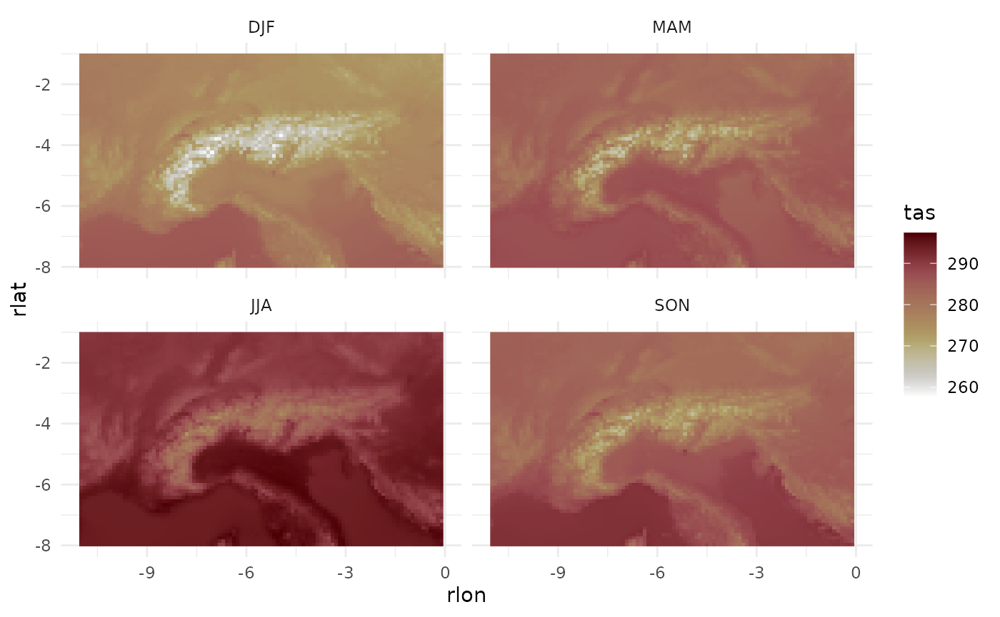
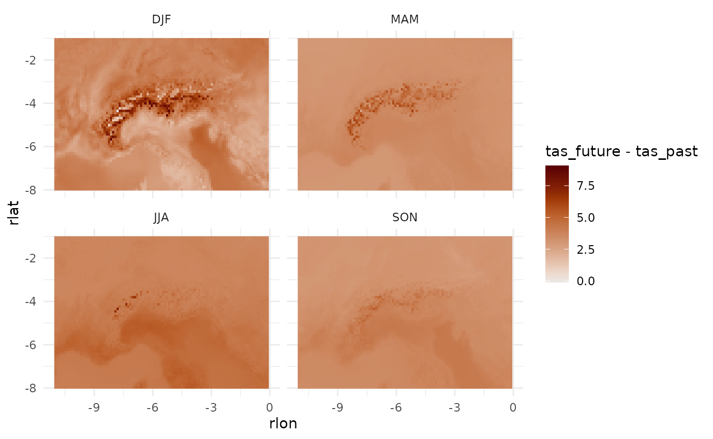
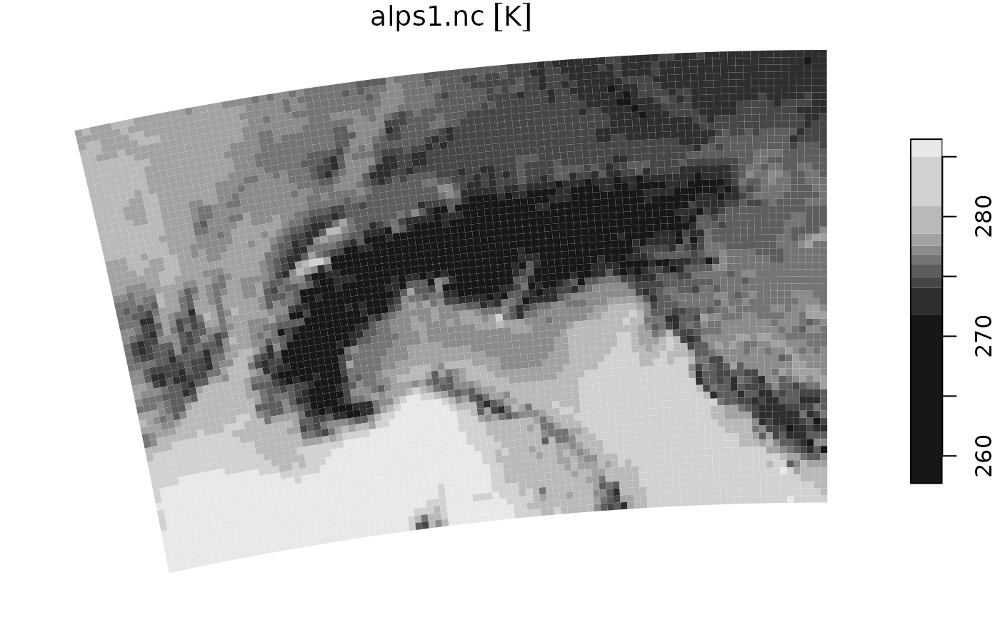
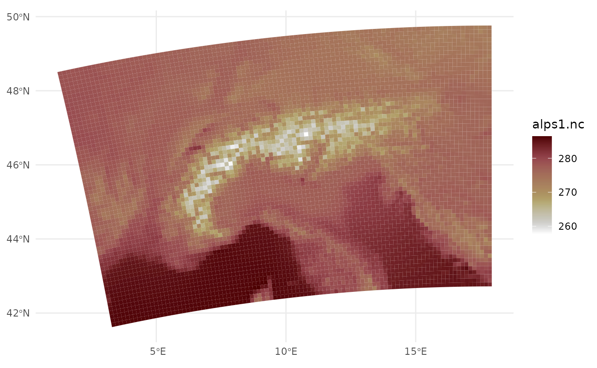
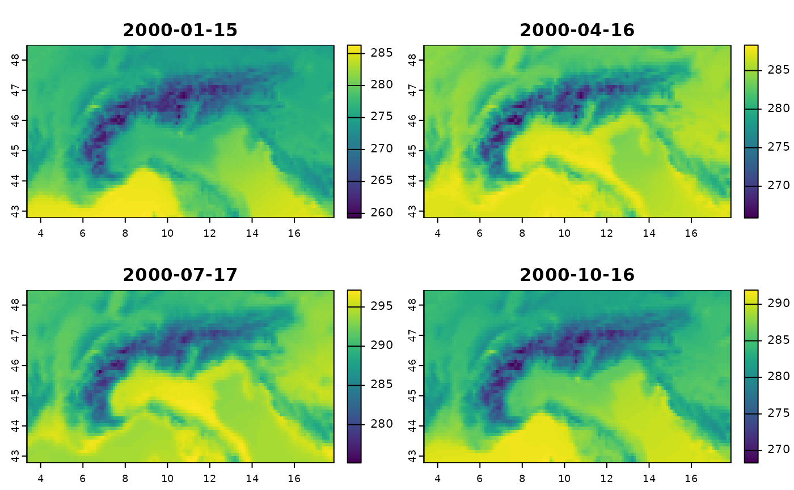

library(eurocordexr)
library(data.table)
# for plotting
library(ggplot2)
#> Error in get(paste0(generic, ".", class), envir = get_method_env()) :
#> object 'type_sum.accel' not found
library(scico)This will show how to read in a grid in long data.table format using the native rotated pole grid.
Note that climate model data can be very heavy, so I like to separate actual data from coordinates and do much of the pre-processing with CDO. For the example here, it’s not that relevant, since file sizes are small - but it can be useful if you have to do a lot of merging or aggregating.
Naturally, the long format used in eurocordexr is not the best choice for array data, but it is more user-friendly when merging and aggregating using data.table or dplyr syntax. And for plotting with ggplot.
The example data (created with CDO) within the package is seasonal means for 1971-2000 and 2071-2100 under RCP8.5 for REMO2015 driven by NorESM, cropped to the European Alps.
file_nc_past <- system.file("extdata", "alps1.nc", package = "eurocordexr")
file_nc_future <- system.file("extdata", "alps2.nc", package = "eurocordexr")Staying in the native rotated-pole grid (with eurocordexr)
First we get the coordinates (just one timestep):
dat_aux <- nc_grid_to_dt(file_nc_past, add_xy = T, date_range = c("2000-01-15", "2000-01-15"))
# keep only cell index (for merging) and coordinates (which have some rounding issues)
dat_aux <- dat_aux[, .(icell, rlon = round(rlon, 3), rlat = round(rlat, 3))]Then the actual data.
dat_past <- nc_grid_to_dt(file_nc_past)
dat_future <- nc_grid_to_dt(file_nc_future)For nicer plotting, create a factor of season labels, with helper function from https://github.com/mitmat/mitmatmisc/.
dat_past[, season := mitmatmisc::season_fct(month(date))]
dat_future[, season := mitmatmisc::season_fct(month(date))]And finally plot the past climatology.
dat_past |>
merge(dat_aux) |>
ggplot(aes(rlon, rlat, fill = tas))+
geom_raster()+
facet_wrap(~season)+
theme_minimal()+
scale_fill_scico(direction = -1)
Or the future change signal.
dat_past[, .(icell, season, tas_past = tas)] |>
merge(dat_future[, .(icell, season, tas_future = tas)]) |>
merge(dat_aux, by = "icell") |>
ggplot(aes(rlon, rlat, fill = tas_future - tas_past))+
geom_raster()+
facet_wrap(~season)+
theme_minimal()+
scale_fill_scico(palette = "vik", midpoint = 0)
Using a curvilinear grid (stars package)
The stars package has some support for the rotated-pole grid with its capability to read curvilinear grids. This won’t give you the best performance, but can work if you do much of the preprocessing outside R.
library(stars)
#> Loading required package: abind
#> Loading required package: sf
#> Linking to GEOS 3.10.2, GDAL 3.4.1, PROJ 8.2.1; sf_use_s2() is TRUE
rs <- read_stars(file_nc_past)
# take 1 timestep
rs1 <- rs[,,,1]
plot(rs1)
Or with ggplot:
ggplot()+
geom_stars(data = rs1)+
theme_minimal()+
scale_fill_scico(direction = -1)
Using a regular lonlat grid (terra package)
Finally, the third way is to first convert the rotated-pole grid into a regular lonlat grid. See the other article on how to do it with CDO.
library(terra)
#> terra 1.8.5
#>
#> Attaching package: 'terra'
#> The following object is masked from 'package:data.table':
#>
#> shift
file_nc_regular <- system.file("extdata", "alps1_regular.nc", package = "eurocordexr")
rs2 <- rast(file_nc_regular)
plot(rs2)